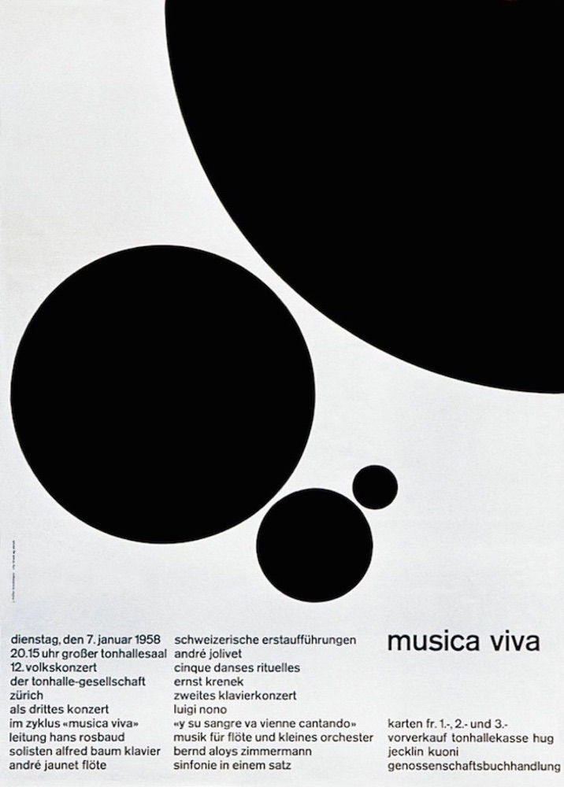

How Josef Müller Brockmann influenced Minimalism and Modernism as we know it today.
With minimalism beginning through the impact of 1950’s swiss design, did Josef Müller Brockmann shape the path of the movement thus influencing the modernist designs we see today?
Who is Josef Müller Brockmann?
Brockmann is a popular name when it comes to swiss design. Being born in Switzerland in 1914, the swiss culture and movements was something he would have been surrounded by. At the age of 14 he began to show signs of his artistic ability in school, however he then left education at the age of 16. At the age of 18 after working in several fields of design which you will read about later, he had the privilege of being in education again. He was taught at ‘Zurich school of Arts and Crafts’ and soon after he left here he began his own design studio, quickly getting his name known as a designer and working on multiple projects such as theatre posters.
Josefs career began to kick off during and after the time of World War 2. This meant Europe was on the mend from a horrendous few years previously. Therefore, people were trying to start fresh and rebuild their society. This allowed a rebirth in art and design, meaning rethinking and new ideas, could this have meant there was a clean slate for Brockmann to influence modernism as a main focus point?
He is said to be the founder of the 'Swiss Design' movement and was a great influence on many. He was even later appointed as director of the departments of graphic design at Zurich school of arts and crafts, which he himself was taught at. After retiring in 1960 he worked with young graphic artists such as Carlo Vivarelli in which they worked together through typography on an exhibition project, thus giving Brockamnn typography experience by designing concert posters for Zurich town hall which he is very well known for.
TopSwiss Design
Swiss designs use crisp, blocky, asymmetric layouts with text aligned to the left. The typefaces used in the designs were sans serif typefaces like Akzidenz Grotesk and, later, Helvetica. All traces of the designer’s concept should be minimalised in order to let the “content” of work be the main focus, therefore enforcing a minimalist design ethos.
Minimalism is something Brockmann loved, when asked, “What do you regard as your best work?” He responded, “The white reverse sides of my posters!”. He consistently pursued the reduction and decline of statements until he has an objective message. His demand for unbiased practical and objective design is what became swiss graphic design. His work was aimed at revealing a key visual message. To do this, he examined multiple elements in the design process, minimalizing each one to their essential nature. Brockmann always strove to form a deeper awareness of how his work was composed by formal planes and volumes and ordered through the use of space and colour.
TopGrid Structures and Posters
He was highly regarded for his posters, which use text, photographs and simple graphics to create striking and rhythmic compositions. The swiss grid style he created within graphic design which enables designs to be constructive is what he is best known for, he was the first person to be truly invested in ‘the grid’. The grid uses straight, horizontal, vertical and diagonal lines, enabling content to be organized with structure. However, he did once state that it isn’t a guarantee but instead an aid.
“In my designs for posters, advertisements, brochures and exhibitions, subjectivity is suppressed in favour of a geometric grid that determines the arrangement of the type and images. The grid is an organisational system that makes it easier to read the message. The grid is an organisational system that enables you to achieve an orderly result at a minimum cost. The task is solved more easily, faster and better.” — Josef Müller Brockmann
For his concert posters, Brockmann came up with the idea of representing music in a visual language. He did this through creating posters that are intelligent due to their handling of type, space and geometric form, giving musical vision. He tried to find mathematical correlations and discovered this through the ‘Fibonacci Scale’. This scale meant his measurements of each shape on the poster were the addition of the measurement of the last two shapes.
 TopInfluences
Jan Tschichold is said to have been a huge influence on Brockmann. Tschilhold first used the idea of a grid structure in his books in which he created aesthetically pleasing page layouts. He also created the principles of ‘new typography’ which Josef liked because it was simple, therefore influencing his modernist ideas.
Does this not mean Tschichold was actually the founder of minimalism? Yes and no. In my opinion Tschichold planted a seed for the beginning of the movement, however Brockmann continued influencing many and made his mark through his unique ideas when it came to graphic design. Tschicholds mark was mainly on the grid structure of his book layouts and universal typography.
With Tschiholds new typography being a favorite of Brockmanns, the typography he favored most was Berthold’s Akzidenz Grotesk. He described it as being universal due to it being easy to understand and its simplicity. Brockmann once described other typefaces that were decorative as unreadable and complicated. He said ‘I wouldn’t read something like that unless I had to‘. His swiss design influence of favoring san serif typefaces due to their clarity stood firm.
TopPhotography
Something many people disregard when it comes to Brockmanns designs is his use of photography. When Brockmann left school at 16, he applied for a job as a photograph retoucher. However, he quickly left due to it not being challenging enough, so he got a job as an illustrator at an architects office instead before studying again. However, in 1953 photography made a comeback for Brockmann and it became a major design source through him moving into the studio of photographer Ernst A.Heiniger. Here he experimented with photography and it became an aid for his poster designs and an essential part of his work, helping him develop confidence with photo-graphics.
When the automobile club in Switzerland became aware of death tolls due to irresponsible driving, they held a competition for a poster design to encourage drivers to drive sensibly. Brockmann came up with a design of a motorbike speeding along a road, bearing down on a child. He used photography to capture the wheel of a motorbike for the poster, he changed the positioning of the wheel so it showed speed and dominance. The child in the poster was made to look small and vulnerable. He experimented with exposures and lighting of the photographs in the creation of this poster which then went to win first place.
TopHow has Brockmann influenced us today?
Today we see simplicity and clarity of use everywhere, even through our websites. Brockmann never used decorative elements in his work because he wanted to get to the main objective, which is what many people want today when on an app or viewing a website, they want it to be easy and simple to use. The grid has definitely influenced todays designs and I feel it’s needed so that designers can understand how to layout information on the many design platforms we have. Objective designs are something that I think is important within todays society to understand more than ever due to the continuous social and political views.
Therefore, the style of Brockmanns minimalistic work can have an influence on many, not only designers but the average viewer due to its clear messages. I definitely believe that if it wasn’t for Brockmann beginning the movement of swiss design that influences minimalism, then the clarity of posters as an example today wouldn’t be as objective as they are. I think designers need to continue to look at Brockmanns work for inspiration for the foreseen future, after all it’s timeless.
TopBibliography
- http://www.eyemagazine.com/feature/article/reputations-josef-muller-brockmann 27/11/2018
- https://www.pinterest.com/pin/36943659416836881/ 5/12/2018
- https://ilovetypography.com/2013/01/12/a-firm-turn-toward-the-objective-josef-muller-brockmann-1948-1981/ 1/12/2018
- http://www.eyemagazine.com/feature/article/reputations-josef-muller-brockmann 1/12/2018
- http://www.designishistory.com/1940/joseph-mueller-brockmann/ 27/11/2018
- http://timbroadwater.com/2014/05/tschichold-dwiggins-muller-brockmann-and-the-grid/ 1/12/2018
- http://stuartcdesign.com/josef-muller-brockmann/ 5/12/2018
- http://www.designishistory.com/home/swiss/ 5/12/2018
- http://www.vangeva.com/josef-muller-brockmann/ 5/12/2018
- https://www.pinterest.com/pin/321937073338816225/ 5/12/2018
- https://www.grafik.net/category/heroes/swiss-star 5/12/2018
- http://sgustokdesign.com/josef-muller-brockmann-posters 5/12/2018
- http://adcglobal.org/hall-of-fame/jan-tschichold/ 5/12/2018
- https://www.pinterest.com/pin/557109416377784847/ 5/12/2018
- https://collection.cooperhewitt.org/objects/18673645/ 5/12/2018
- BOOK – Josef Muller Brockmann by Kerry William Purcell
- BOOK - Lars Muller Josef Muller Brockmann Pioneers of Swiss and Graphic Design